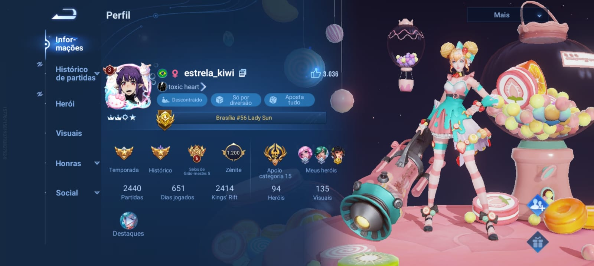

Sim minha namorda é gamer. E não uma qualquer, vey tu é boa mesmo Isabela, bizarro ver você jogando esse jogo, parece que nasceu pra isso vey
É a estrela_kiwi né, não tem jeito.
MDSS Com essa boneca é sacanagem o que tu é capaz de fazer, tu é a própria Lady Sun KJKJKJK Tua Main né. Joga muito meu bem, orgulho dmais de ti!
VEYY OLHA O VÍCIO
